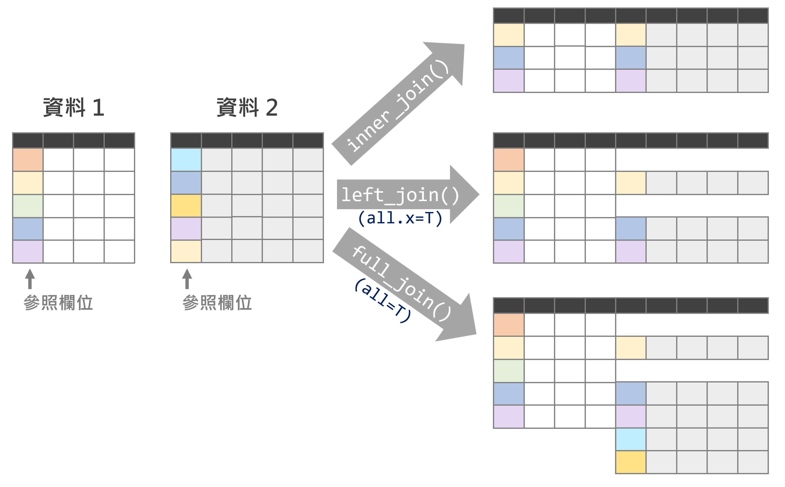
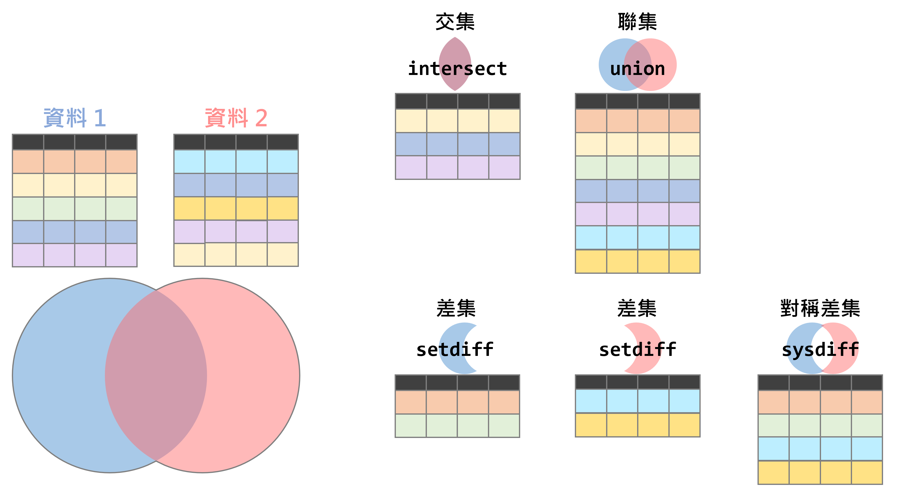
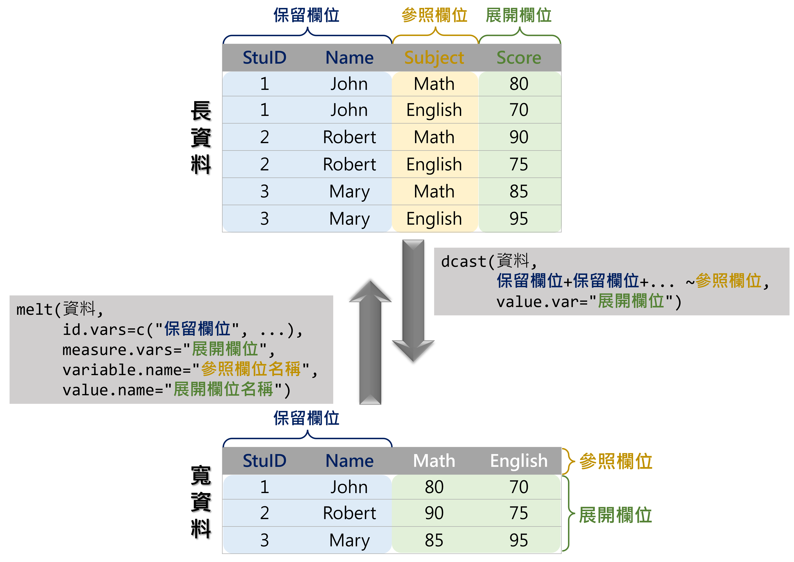

Chapter 2 Data Tidy and Processing
Data tidy and processing are essential first steps before conducting data analysis. This stage enables an initial examination of data patterns and allows descriptive analysis through tables or visualisations. After the data have been properly organised and prepared, more advanced analyses, such as building statistical models or analytical tools, can be conducted to uncover deeper insights from the data.
In R, the dplyr, tidyr, and data.table packages are among the most widely used tools for data manipulation. These packages should be installed and loaded before proceeding.
A summary of commonly used packages and functions for data tidy and processing is provided in Table 2.1. For a complete overview of the syntax and functionality of all functions introduced in this chapter, please refer to Table 2.3.
| Package | Function | Usage |
|---|---|---|
base
|
merge()
|
Join two datasets based on specified columns |
dplyr
|
bind_rows()
|
Merge rows |
bind_cols()
|
Merge columns | |
select()
|
Select specific columns | |
filter()
|
Filter data based on conditions | |
mutate()
|
Add a new variable (column) | |
group_by()
|
Group data by specified columns | |
summarise()
|
Summarise grouped data | |
reframe()
|
Summarie grouped data | |
slice()
|
Extract specific records by group | |
left_join()
|
Join two datasets based on specified columns (keep only left dataset) | |
inner_join()
|
Join two datasets based on specified columns (keep only common observations) | |
full_join()
|
Join two datasets based on specified columns (keep all observations) | |
arrange()
|
Sort data based on specified columns | |
rename()
|
Rename columns | |
distinct()
|
Remove duplicate records | |
intersect()
|
Find rows common to both datasets (intersection) | |
union()
|
Keep all rows from both datasets (union, removing duplicates) | |
union_all()
|
Keep all rows from both datasets (union, keeping duplicates) | |
setdiff()
|
Find rows that exist only in the left dataset (set difference) | |
symdiff()
|
Find rows that exist in only one of the datasets (symmetric difference) | |
setequal()
|
Check whether two datasets are identical (ignoring order) | |
case_when()
|
Conditional evaluation | |
data.table
|
setDT()
|
Convert data to data.table format
|
setkey()
|
Set keys for a data.table
|
|
rbindlist()
|
Combine all elements in a list and convert to data.table
|
|
merge.data.table()
|
Join two datasets based on specified columns | |
dcast()
|
Transform long data into wide format | |
melt()
|
Transform wide data into long format | |
tidyr
|
separate()
|
Split columns |
fill()
|
Fill missing values |
To demonstrate the process of data tidy and processing, the dataset used in the following examples is provided below. Please read the data first.
# world country dataset
world=read.csv("https://raw.githubusercontent.com/ChiaJung-Yeh/Transport-Analysis/master/Data/world.csv")# coffee production dataset
coffee=read.csv("https://raw.githubusercontent.com/ChiaJung-Yeh/Transport-Analysis/master/Data/coffee.csv")The world country dataset (world) records information for countries worldwide, including population (pop), area (area_km2), life expectancy (lifeExp), and GDP per capita (gdpPerCap). The coffee production dataset (coffee) records coffee production for countries around the world in 2016 and 2017.
2.1 data.frame and data.table
Most functions provided by the dplyr and data.table packages offer similar functionality. However, when using functions from the data.table package, the dataset must first be converted to the data.table format in order to perform the analysis correctly.
In addition, functions in the data.table package are typically more computationally efficient and therefore have clear advantages when working with large datasets. Based on empirical experience, when handling datasets with tens of millions of observations, the use of the data.table package is generally recommended. For smaller datasets, however, the performance difference between the two packages is usually negligible.
For a comparison of the performance between these two data manipulation packages, please refer to the following article:
⌾ Create data.table format dataset
A dataset in the data.table format can be created directly using the data.table() function, whose syntax is identical to that of data.frame(). To convert an existing data.frame into the data.table format, the setDT() function can be used to assign the data.table structure. Using the world dataset as an example, the code is written as follows:
# use read.csv() to read the data into data.frame
world_DT=read.csv("https://raw.githubusercontent.com/ChiaJung-Yeh/Transport-Analysis/master/Data/world.csv")
# check the data format
class(world_DT)## [1] "data.frame"# setDT() function to assign the data.table format
setDT(world_DT)
# check the data format again
class(world_DT)## [1] "data.table" "data.frame"After applying the setDT() function, the dataset world_DT is additionally assigned the data.table format while still retaining the data.frame format.
Alternatively, data can be read directly using the fread() function, which automatically returns the data in the data.table format. The following example use fread() function to the world country dataset into data.table format.
world_DT=fread("https://raw.githubusercontent.com/ChiaJung-Yeh/Transport-Analysis/master/Data/world.csv")⌾ Add primary key
A key refers to the column(s) used to identify important attributes in a dataset. The term “key” implies that the column exhibits unique values, allowing it to be used to retrieve specific records without matching multiple different observations. For example, in a dataset containing students’ exam results, a student’s ID number or name may be used as a key because these attributes can uniquely identify a particular student. In contrast, exam scores are not suitable as a key because multiple students may receive the same score, meaning the value cannot uniquely identify a single record.
Based on this concept, keys are an essential component of the data.table data structure and contribute to the high computational efficiency of the data.table package. Using the world_DT dataset as an example, the column name_long (country name) can be defined as the key using the following function:
2.2 Combine Data
⌾ Combine rows and columns
In Chapter 1, we introduced the concept of row and column binding for data frames (see Data Frame section), including the functions rbind() and cbind(). The dplyr package provides similar functions, bind_rows() and bind_cols(), which serve the same purposes: the former combines datasets by rows, while the latter combines them by columns. In fact, the functionality of bind_cols() is identical to that of cbind().
However, the rbind() function requires the input datasets to have exactly the same columns; otherwise, the datasets cannot be combined. In contrast, bind_rows() is more flexible, as it merges datasets based on their shared columns and fills NA for columns that are not present in one of the datasets. A specific example is shown below.
# create two dataset with different fields
score_data1=data.frame(Student=c("Robert", "Jessie", "Rose", "John"),
Class=c("A", "B", "D", "C"),
Score=c("80", "95", "70", "65"))
score_data2=data.frame(Student=c("Penny", "Ruby", "Tom"),
Score=c("90", "70", "50"))
rbind(score_data1, score_data2)## Error in rbind(deparse.level, ...): numbers of columns of arguments do not matchAs shown in the example above, score_data1 contains the column Class, while score_data2 does not. As a result, the two datasets cannot be successfully combined. In this case, the bind_rows() function can be used instead. The code is rewritten as follows:
## Student Class Score
## 1 Robert A 80
## 2 Jessie B 95
## 3 Rose D 70
## 4 John C 65
## 5 Penny <NA> 90
## 6 Ruby <NA> 70
## 7 Tom <NA> 50Although score_data2 does not contain the Class column, the two datasets can still be combined, with NA values filled in for the missing entries.
⌾ Bind all rows in a list
The data.table package also provides the rbindlist() function, which can combine all datasets stored in a list into a single dataset. The following example uses rbindlist() function to combine all data frames in the list. It should be noted that when using this function, all data frames in the list must have consistent column names.
2.3 Select Fields
In Chapter 1, we introduced methods for selecting fields in a data frame. The dplyr package also provides the select() function for the same purpose. The function is written as follows.
⌾ Select fields
Taking the selection of the name_long and area_km2 columns from the world dataset as an example, the code is written as follows.
# select name_long and area_km2
world_sel1=select(world, name_long, area_km2)
# check the first six rows
head(world_sel1)## name_long area_km2
## 1 Fiji 19289.97
## 2 Tanzania 932745.79
## 3 Western Sahara 96270.60
## 4 Canada 10036042.98
## 5 United States 9510743.74
## 6 Kazakhstan 2729810.51The following presents other approaches to select fields. Please review the Retrieve specific columns in data.frame.
# use the column index
world[, c(1,7)]
# use the column name
world[, c("name_long", "area_km2")]
# retrieve a specific name
world$name_long
world[["area_km2"]]Alternatively, the columns to be returned can be stored in a character vector and then selected using the all_of() function. The code is written as follows.
# create a column name vector
sel_col_name=c("name_long", "continent", "subregion")
# use all_of() function
world_sel2=select(world, all_of(sel_col_name))
# check the first six rows
head(world_sel2)## name_long continent subregion
## 1 Fiji Oceania Melanesia
## 2 Tanzania Africa Eastern Africa
## 3 Western Sahara Africa Northern Africa
## 4 Canada North America Northern America
## 5 United States North America Northern America
## 6 Kazakhstan Asia Central Asia⌾ Remove field
To remove specific columns, place - before the column name to exclude it.
# remove continent, region_un, subregion, type
world_sel3=select(world, -continent, -region_un, -subregion, -type)
# check the first six rows
head(world_sel3)## iso_a2 name_long area_km2 pop lifeExp gdpPercap
## 1 FJ Fiji 19289.97 885806 69.96000 8222.254
## 2 TZ Tanzania 932745.79 52234869 64.16300 2402.099
## 3 EH Western Sahara 96270.60 NA NA NA
## 4 CA Canada 10036042.98 35535348 81.95305 43079.143
## 5 US United States 9510743.74 318622525 78.84146 51921.985
## 6 KZ Kazakhstan 2729810.51 17288285 71.62000 23587.3382.4 Filter Data
Data can be filtered based on specified conditions using the filter() function. The function is written as follows.
In the above syntax, CONDITION_1 and CONDITION_2 are used to filter records that satisfy the specified criteria. The resulting dataset will include only the observations that meet all conditions defined within the function.
⌾ Filtering numeric data
For example, to filter countries in the world dataset with a population (pop) greater than 100 million:
# filter the country with population over one hundred million
world_fil1=filter(world, pop>100000000)
# check the first six rows
head(world_fil1)## iso_a2 name_long continent region_un subregion
## 1 US United States North America Americas Northern America
## 2 ID Indonesia Asia Asia South-Eastern Asia
## 3 RU Russian Federation Europe Europe Eastern Europe
## 4 MX Mexico North America Americas Central America
## 5 BR Brazil South America Americas South America
## 6 NG Nigeria Africa Africa Western Africa
## type area_km2 pop lifeExp gdpPercap
## 1 Country 9510743.7 318622525 78.84146 51921.985
## 2 Sovereign country 1819251.3 255131116 68.85600 10003.089
## 3 Sovereign country 17018507.4 143819666 70.74366 25284.586
## 4 Sovereign country 1969480.3 124221600 76.75300 16622.597
## 5 Sovereign country 8508557.1 204213133 75.04200 15374.262
## 6 Sovereign country 905071.7 176460502 52.54900 5671.901## [1] 12⌾ Filtering character data
When filtering character data, the %in% operator is commonly used to check whether elements of one vector exist in another vector. Please refer to the section Vector for checking whether each element in a vector is contained in another vector.
The follwowing example presents how to filter countries in the world dataset whose continent belongs to Asia or Europe.
# filter data by population
world_fil2=filter(world, continent %in% c("Asia", "Europe"))
# check out the first six rows
head(world_fil2)## iso_a2 name_long continent region_un subregion
## 1 KZ Kazakhstan Asia Asia Central Asia
## 2 UZ Uzbekistan Asia Asia Central Asia
## 3 ID Indonesia Asia Asia South-Eastern Asia
## 4 RU Russian Federation Europe Europe Eastern Europe
## 5 NO Norway Europe Europe Northern Europe
## 6 TL Timor-Leste Asia Asia South-Eastern Asia
## type area_km2 pop lifeExp gdpPercap
## 1 Sovereign country 2729810.51 17288285 71.62000 23587.338
## 2 Sovereign country 461410.26 30757700 71.03900 5370.866
## 3 Sovereign country 1819251.33 255131116 68.85600 10003.089
## 4 Sovereign country 17018507.41 143819666 70.74366 25284.586
## 5 Sovereign country 397994.63 NA NA NA
## 6 Sovereign country 14714.93 1212814 68.28500 6262.906⌾ Filter by multiple conditions (AND)
All conditions specified within the filter() function must be satisfied for a record to be retained. Using the world dataset as an example, the following code filters countries that belong to Asia or Europe and have a population greater than 100 million.
# filter the data by multiple conditions
world_fil3=filter(world, continent %in% c("Asia", "Europe"), pop>100000000)
# check the first six rows
head(world_fil3)## iso_a2 name_long continent region_un subregion
## 1 ID Indonesia Asia Asia South-Eastern Asia
## 2 RU Russian Federation Europe Europe Eastern Europe
## 3 IN India Asia Asia Southern Asia
## 4 BD Bangladesh Asia Asia Southern Asia
## 5 PK Pakistan Asia Asia Southern Asia
## 6 CN China Asia Asia Eastern Asia
## type area_km2 pop lifeExp gdpPercap
## 1 Sovereign country 1819251.3 255131116 68.85600 10003.089
## 2 Sovereign country 17018507.4 143819666 70.74366 25284.586
## 3 Sovereign country 3142892.1 1293859294 68.02100 5385.142
## 4 Sovereign country 133782.1 159405279 71.80300 2973.042
## 5 Sovereign country 874120.0 185546257 66.13900 4576.227
## 6 Country 9409830.5 1364270000 75.93200 12758.648## [1] 8In addition to separating multiple conditions with commas, all conditions can also be combined using the & operator. The code is rewritten as follows.
# use & to set all the conditions
world_fil4=filter(world, continent %in% c("Asia", "Europe") & pop>100000000)
Filter data by multiple conditions (AND) in data.table
⌾ Filter by multiple conditions (OR)
The filter() function returns data only when all specified conditions are satisfied. However, in some cases, we may want to retain observations when any one of the conditions is met. In such situations, the conditions can be separated using the | operator. The code is written as follows:
# meet one of the condition
world_fil5=filter(world, continent %in% c("Asia", "Europe") | pop>100000000)
# see the number of rows (=number of countries met the conditions)
nrow(world_fil5)## [1] 902.5 Append Fields
前面所提及的cbind()與bind_cols()函式可以將欄位予以合併，藉此擴充資料屬性。此外，於第一章節中所提及的向量「$」亦可新增資料屬性。除以上寫法外，可利用dplyr套件中的mutate()函式擴增資料屬性，且操作更具有彈性。函式撰寫如下。
⌾ 新增資料屬性
以world資料為例，新增「各國人口密度(pop_dens)」之欄位（人口密度即總人口數除以面積），並新增一欄位串接 continent 和 subregion（使用paste0()函式串接向量）。程式碼撰寫如下。
# 新增人口密度屬性
world_mut=mutate(world, pop_dens=pop/area_km2,
district=paste0(continent, " (", subregion, ")"))
# 查看前六筆資料
head(world_mut[, c("name_long", "area_km2", "pop", "pop_dens", "district")])## name_long area_km2 pop pop_dens
## 1 Fiji 19289.97 885806 45.920547
## 2 Tanzania 932745.79 52234869 56.001184
## 3 Western Sahara 96270.60 NA NA
## 4 Canada 10036042.98 35535348 3.540773
## 5 United States 9510743.74 318622525 33.501326
## 6 Kazakhstan 2729810.51 17288285 6.333145
## district
## 1 Oceania (Melanesia)
## 2 Africa (Eastern Africa)
## 3 Africa (Northern Africa)
## 4 North America (Northern America)
## 5 North America (Northern America)
## 6 Asia (Central Asia)
使用data.table套件新增資料屬性
# 新增一個變數時
world_mut=world_DT[, pop_dens := pop/area_km2]
# 新增多個變數時
world_mut=world_DT[, c("pop_dens", "district") := .(pop/area_km2, paste0(continent, " (", subregion, ")"))]由以上程式碼可知，透過data.table套件新增欄位時，須利用「:=」定義運算方式，並將新增的欄位名稱置於其左側，而運算過程則放置於右側。
其他寫法如下（請回顧擴增資料欄（新增屬性）小節）：
# 利用$直接新增欄位
world$pop_dens=world$pop/world$area_km2
world$district=paste0(world$continent, " (", world$subregion, ")")⌾ 新增多個相同運算的資料屬性
此外，若欲依據多個欄位作相同運算，並取代原欄位（或建立新欄位），可利用mutate_at()函式達成之，其中必須放置欲運算的欄位名稱，函式撰寫架構如下。其中，欄位名稱的撰寫有兩種方法，第一種（以下程式碼中的「-1」）是將欲運算的變數以文字向量儲存；第二種（以下程式碼中的「-2」）則是將欲運算的欄位包在vars()函式中。
另須注意，若運算函式僅一個，則回傳結果會直接取代舊有欄位；而若希望保留原本的欄位不變，並新增新的欄位名稱，則應透過list()函式將運算的函式包覆其中。在list()函式中可進一步設定新增欄位的名稱，其是依據原始欄位加上底線再加上新名稱，亦即舊名稱_新名稱。
# 取代原欄位-1
mutate_at(資料, c("變數1", "變數2", ...), 運算函式)
# 取代原欄位-2
mutate_at(資料, vars(變數1, 變數2, ...), 運算函式)
# 建立新欄位-1
mutate_at(資料, c("變數1", "變數2", ...), list(新名稱1=運算函式1, 新名稱2=運算函式2))
# 建立新欄位-2
mutate_at(資料, vars(變數1, 變數2, ...), list(新名稱1=運算函式1, 新名稱2=運算函式2))舉例而言，若欲針對world資料，建立面積與人口數的對數值（log()），程式碼撰寫如下。
# 建立面積與人口數的對數值欄位(取代原欄位)-1
world_mutat1=mutate_at(world, c("area_km2", "pop"), log)
# 建立面積與人口數的對數值欄位(取代原欄位)-2
world_mutat1=mutate_at(world, vars(area_km2, pop), log)
# 查看前六筆資料
head(world_mutat1[, c("name_long","area_km2","pop")])## name_long area_km2 pop
## 1 Fiji 9.867341 13.69425
## 2 Tanzania 13.745888 17.77126
## 3 Western Sahara 11.474918 NA
## 4 Canada 16.121693 17.38604
## 5 United States 16.067933 19.57952
## 6 Kazakhstan 14.819743 16.66554請注意，以上回傳結果中 area_km2 與 pop 兩欄位已變為正規化的數值，原始資料即被取代。
而若欲同時建立面積與人口數的對數值（log()）與正規化（scale()），並保留原始欄位，程式碼撰寫如下。
# 建立面積與人口數的對數值欄位(建立新欄位)-1
world_mutat2=mutate_at(world, c("area_km2", "pop"), list(log=log, scale=scale))
# 建立面積與人口數的對數值欄位(建立新欄位)-2
world_mutat2=mutate_at(world, vars(area_km2, pop), list(log=log, scale=scale))
# 查看前六筆資料
head(world_mutat2[, c("name_long","area_km2","pop","area_km2_log","pop_log","area_km2_scale","pop_scale")])## name_long area_km2 pop area_km2_log pop_log area_km2_scale
## 1 Fiji 19289.97 885806 9.867341 13.69425 -0.37591698
## 2 Tanzania 932745.79 52234869 13.745888 17.77126 0.04630964
## 3 Western Sahara 96270.60 NA 11.474918 NA -0.34033422
## 4 Canada 10036042.98 35535348 16.121693 17.38604 4.25412603
## 5 United States 9510743.74 318622525 16.067933 19.57952 4.01131701
## 6 Kazakhstan 2729810.51 17288285 14.819743 16.66554 0.87696674
## pop_scale
## 1 -0.28063108
## 2 0.06304041
## 3 NA
## 4 -0.04872695
## 5 1.84593259
## 6 -0.170851772.6 Conditional Evaluation
⌾ 使用ifelse()函式判斷
於前一章中有提及「邏輯判斷」的流程控制方法，其中ifelse()函式可大幅縮減程式碼。在此亦可透過mutate()函式搭配ifelse()函式建立邏輯判斷的結果。以world資料為例，新增一欄位判斷國家面積的大小，若國家面積大於整體資料中位數，標記為「L」；否則記錄為「S」。程式碼撰寫如下。
# 先計算面積中位數
area_med=median(world$area_km2)
# 利用ifelse函式判斷類群
world_ifel=mutate(world, TYPE=ifelse(area_km2>=area_med, "L", "S"))
# 查看六筆資料
head(world_ifel[, c("name_long", "area_km2", "TYPE")])## name_long area_km2 TYPE
## 1 Fiji 19289.97 S
## 2 Tanzania 932745.79 L
## 3 Western Sahara 96270.60 S
## 4 Canada 10036042.98 L
## 5 United States 9510743.74 L
## 6 Kazakhstan 2729810.51 L
⌾ 使用case_when()函式判斷
ifelse()函式較適合應用於單純的邏輯判斷，若涉及多項判斷式可能須建立巢狀迴圈，使程式碼變得甚為複雜。此時我們可應用dplyr套件中的case_when()函式，並同樣搭配mutate()函式以新增欄位。case_when()函式撰寫架構如下：
其中的「TRUE」意謂著若前面所有條件皆「不成立」時，則回傳TRUE賦予的結果。
再次以world資料為例，若欲將所有國家依據面積及人口數予以分類，並藉由中位數劃分數值高低，最後分為「面積大人口多（LALP）」、「面積大人口少（LASP）」、「面積小人口多（SALP）」與「面積小人口少（SASP）」四者。程式碼撰寫如下。
# 先計算面積與人口數中位數
area_med=median(world$area_km2)
pop_med=median(world$pop, na.rm=T) # 由於人口數中含有NA值，故設定na.rm=T以移除NA值後再計算
# 使用case_when()函式新增分類
world_casewhen=mutate(world, TYPE=case_when(
area_km2>=area_med & pop>=pop_med ~ "LALP",
area_km2>=area_med & pop<pop_med ~ "LASP",
area_km2<area_med & pop>=pop_med ~ "SALP",
TRUE ~ "SASP"
))
# 查看六筆資料
head(world_casewhen[, c("name_long", "area_km2", "pop", "TYPE")])## name_long area_km2 pop TYPE
## 1 Fiji 19289.97 885806 SASP
## 2 Tanzania 932745.79 52234869 LALP
## 3 Western Sahara 96270.60 NA SASP
## 4 Canada 10036042.98 35535348 LALP
## 5 United States 9510743.74 318622525 LALP
## 6 Kazakhstan 2729810.51 17288285 LALP2.7 Sort Data
⌾ 資料排序（正序）
在第一章節中我們提及許多排序的方法，包含向量排序（sort()、order()、rank()）與文字排序（str_sort()、str_order()）。而在此我們可以進一步藉由dplyr套件中的arrange()函式排序資料，其函式撰寫架構如下。
以world資料為例，若欲將所有國家依人口數由少至多排列，程式碼撰寫如下。
## name_long continent pop
## 1 Greenland North America 56295
## 2 Vanuatu Oceania 258850
## 3 New Caledonia Oceania 268050
## 4 Iceland Europe 327386
## 5 Belize North America 351694
## 6 Bahamas North America 382169⌾ 資料排序（倒序）
須注意的是arrange()函式預設為由小到大（正序）排列，故若欲「倒序」排列，可在待排序欄位引數前面加上「-」即可，抑或使用desc(待排序欄位)函式。以world資料依人口數由多至少排列為例，程式碼撰寫如下。
world_arr2=arrange(world, -pop)
# 或使用desc()函式倒序排列
world_arr2=arrange(world, desc(pop))
# 查看前六筆資料
head(world_arr2[, c("name_long", "continent", "pop")])## name_long continent pop
## 1 China Asia 1364270000
## 2 India Asia 1293859294
## 3 United States North America 318622525
## 4 Indonesia Asia 255131116
## 5 Brazil South America 204213133
## 6 Pakistan Asia 1855462572.8 Group and Summarise
⌾ 將資料依據特定欄位分群
利用group_by()函式分群後，資料並不會有任何變化，必須再搭配其他函式才能發揮分群的效果。
⌾ 分群篩選資料（filter()）
透過分群篩選資料，可篩選各群組符合條件者，函式撰寫架構如下。
請注意函式中的「%>%」為水管（pipe），可以承繼前一程式碼操作所得資料。只有在使用的資料皆相同時，尚能透過「%>%」函式連接程式碼。
以world資料為例，先將資料依據洲（continent）分群，而後篩選出各洲資料中面積最大者，程式碼撰寫如下。
world_gro1=group_by(world, continent)%>%
filter(area_km2==max(area_km2))
# 查看資料
world_gro1[, c("continent","name_long","area_km2")]## # A tibble: 8 x 3
## # Groups: continent [8]
## continent name_long area_km2
## <chr> <chr> <dbl>
## 1 North America Canada 10036043.
## 2 Africa Democratic Republic of the Congo 2323492.
## 3 Europe Russian Federation 17018507.
## 4 Seven seas (open ocean) French Southern and Antarctic Lands 11603.
## 5 South America Brazil 8508557.
## 6 Oceania Australia 7687614.
## 7 Asia China 9409830.
## 8 Antarctica Antarctica 12335956.
⌾ 分群新增資料屬性（mutate()）
透過分群新增資料屬性，可依據不同群組設定運算函式，藉此新增資料屬性。以world資料為例，若欲計算各洲面積累積加總，程式碼撰寫如下。
world_gro2=group_by(world, continent)%>%
mutate(area_km2_cum=cumsum(area_km2))%>%
arrange(continent)
# 查看前六筆資料
head(world_gro2[, c("continent","name_long","area_km2","area_km2_cum")])## # A tibble: 6 x 4
## # Groups: continent [1]
## continent name_long area_km2 area_km2_cum
## <chr> <chr> <dbl> <dbl>
## 1 Africa Tanzania 932746. 932746.
## 2 Africa Western Sahara 96271. 1029016.
## 3 Africa Democratic Republic of the Congo 2323492. 3352509.
## 4 Africa Somalia 484333. 3836842.
## 5 Africa Kenya 590837. 4427679.
## 6 Africa Sudan 1850886. 6278564.
⌾ 分群篩選資料（slice()）
slice()函式用以回傳指定條件的索引值，故搭配group_by()時可以篩選各分群中的指定橫列位。函式撰寫架構如下。
舉例而言，若欲回傳world資料中各分群內的第一筆資料，程式碼撰寫如下。
world_gro3=group_by(world, continent)%>%
slice(1)
# 查看資料
world_gro3[, c("continent","name_long","area_km2","pop","lifeExp","gdpPercap")]## # A tibble: 8 x 6
## # Groups: continent [8]
## continent name_long area_km2 pop lifeExp gdpPercap
## <chr> <chr> <dbl> <int> <dbl> <dbl>
## 1 Africa Tanzania 9.33e5 5.22e7 64.2 2402.
## 2 Antarctica Antarctica 1.23e7 NA NA NA
## 3 Asia Kazakhstan 2.73e6 1.73e7 71.6 23587.
## 4 Europe Russian Federation 1.70e7 1.44e8 70.7 25285.
## 5 North America Canada 1.00e7 3.55e7 82.0 43079.
## 6 Oceania Fiji 1.93e4 8.86e5 70.0 8222.
## 7 Seven seas (open ocean) French Southern an~ 1.16e4 NA NA NA
## 8 South America Argentina 2.78e6 4.30e7 76.3 18798.
使用data.table套件分群統計
函式架構：
回傳world資料中各分群內的第一筆資料。
此外，亦可擷取多個索引值的資料，舉例而言，若欲回傳world資料中各分群內的第一筆與最後一筆資料，程式碼撰寫如下。
world_gro4=group_by(world, continent)%>%
slice(1, n())
# 查看資料
world_gro4[, c("continent","name_long")]## # A tibble: 16 x 2
## # Groups: continent [8]
## continent name_long
## <chr> <chr>
## 1 Africa Tanzania
## 2 Africa South Sudan
## 3 Antarctica Antarctica
## 4 Antarctica Antarctica
## 5 Asia Kazakhstan
## 6 Asia Cyprus
## 7 Europe Russian Federation
## 8 Europe Kosovo
## 9 North America Canada
## 10 North America Trinidad and Tobago
## 11 Oceania Fiji
## 12 Oceania Australia
## 13 Seven seas (open ocean) French Southern and Antarctic Lands
## 14 Seven seas (open ocean) French Southern and Antarctic Lands
## 15 South America Argentina
## 16 South America Paraguay
使用data.table套件分群統計
回傳world資料中各分群（洲）內的第一筆與最後一筆資料，程式碼撰寫如下。
上述程式碼中的.N意同dplyr套件中的n()。
group_by() %>% slice()函式亦可與arrange()函式結合，以擷取排序後特定序位的資料。再以world資料為例，若欲擷取每個洲前三大面積的國家，可以先利用arrange()函式將所有資料依據面積（area_km2）排列，而後再透過group_by() %>% slice()函式擷取需要的索引值（即1:3）。程式碼撰寫如下。
world_gro5=arrange(world, desc(area_km2))%>%
group_by(continent)%>%
slice(1:3)
# 查看資料
world_gro5[, c("continent","name_long","area_km2","pop","lifeExp","gdpPercap")]## # A tibble: 20 x 6
## # Groups: continent [8]
## continent name_long area_km2 pop lifeExp gdpPercap
## <chr> <chr> <dbl> <int> <dbl> <dbl>
## 1 Africa Democratic Republ~ 2.32e6 7.37e7 58.8 785.
## 2 Africa Algeria 2.32e6 3.91e7 75.6 13483.
## 3 Africa Sudan 1.85e6 3.77e7 64.0 4188.
## 4 Antarctica Antarctica 1.23e7 NA NA NA
## 5 Asia China 9.41e6 1.36e9 75.9 12759.
## 6 Asia India 3.14e6 1.29e9 68.0 5385.
## 7 Asia Kazakhstan 2.73e6 1.73e7 71.6 23587.
## 8 Europe Russian Federation 1.70e7 1.44e8 70.7 25285.
## 9 Europe France 6.45e5 NA NA NA
## 10 Europe Ukraine 5.73e5 4.53e7 71.2 8243.
## 11 North America Canada 1.00e7 3.55e7 82.0 43079.
## 12 North America United States 9.51e6 3.19e8 78.8 51922.
## 13 North America Greenland 2.21e6 5.63e4 NA NA
## 14 Oceania Australia 7.69e6 2.35e7 82.3 43547.
## 15 Oceania Papua New Guinea 4.65e5 7.76e6 65.2 3709.
## 16 Oceania New Zealand 2.78e5 4.51e6 81.4 34455.
## 17 Seven seas (open ocean) French Southern a~ 1.16e4 NA NA NA
## 18 South America Brazil 8.51e6 2.04e8 75.0 15374.
## 19 South America Argentina 2.78e6 4.30e7 76.3 18798.
## 20 South America Peru 1.31e6 3.10e7 74.5 11548.
使用data.table套件分群統計
回傳world資料中各分群（洲）面積前三大的資料，程式碼撰寫如下。
與dplyr套件的撰寫方式相同，若欲串接不同的函式，可透過 pipe (%>%) 連接。另外請注意此回傳結果會保留所有匹配與未匹配的資料，例如world_DT資料中 Antarctica 僅有一個區域，而由於我們尋找前三筆資料，此函式會回傳所有三筆結果，未匹配者則在其他筆資料中顯示NA。
group_by() %>% filter()函式無法透過多個條件設定，回傳符合各個不同條件的資料。然而實務上有時候希望擷取滿足多個不同條件的資料，此時可以利用group() %>% slice()達成目的。
以world資料為例，先將資料依據洲（continent）分群，而後篩選出各洲資料中面積最大與最小者，程式碼撰寫如下。
world_gro6=group_by(world, continent)%>%
slice(which.max(area_km2),
which.min(area_km2))
# 查看所有資料
world_gro6[, c("continent","name_long","area_km2")]## # A tibble: 16 x 3
## # Groups: continent [8]
## continent name_long area_km2
## <chr> <chr> <dbl>
## 1 Africa Democratic Republic of the Congo 2323492.
## 2 Africa The Gambia 14031.
## 3 Antarctica Antarctica 12335956.
## 4 Antarctica Antarctica 12335956.
## 5 Asia China 9409830.
## 6 Asia Northern Cyprus 3786.
## 7 Europe Russian Federation 17018507.
## 8 Europe Luxembourg 2417.
## 9 North America Canada 10036043.
## 10 North America Trinidad and Tobago 7738.
## 11 Oceania Australia 7687614.
## 12 Oceania Vanuatu 7490.
## 13 Seven seas (open ocean) French Southern and Antarctic Lands 11603.
## 14 Seven seas (open ocean) French Southern and Antarctic Lands 11603.
## 15 South America Brazil 8508557.
## 16 South America Falkland Islands 16364.以上程式碼中which.max()函式用以尋找最大值的索引；which.min()則尋找最小值之索引。此時利用group_by() %>% slice()函式可同時回傳符合不同特定條件者。綜上所述，group_by() %>% slice()函式的使用上相當具彈性。
使用data.table套件分群統計
回傳world資料中各分群（洲）面積最大與最小的資料，程式碼撰寫如下。
⌾ 分群統計資料（summarise()）
分群統計資料可針對各群組內的欄位做運算，如最大值、最小值、加總、平均…等，抑或使用自定義函式。分群統計資料的函式撰寫架構如下。
以world資料為例，先將資料依據洲（continent）分群，而後統計各洲總人口數與國家數，程式碼撰寫如下。
world_gro7=group_by(world, continent)%>%
summarise(pop=sum(pop, na.rm=T),
County_N=n())
# 輸出資料
world_gro7## # A tibble: 8 x 3
## continent pop County_N
## <chr> <dbl> <int>
## 1 Africa 1154946633 51
## 2 Antarctica 0 1
## 3 Asia 4311408059 47
## 4 Europe 669036256 39
## 5 North America 565028684 18
## 6 Oceania 37757833 7
## 7 Seven seas (open ocean) 0 1
## 8 South America 412060811 13請注意於本範例中由於總人口數（pop）欄位中含有部分 NA，故為避免計算結果有誤，須在sum()函式中設定na.rm=T引數。此外，由輸出結果可發現，有別於group_by() %>% filter()函式會回傳所有的資料欄位，group_by() %>% summarise()函式僅回傳指定的統計資料欄位。另外n()函式表示計算各分群內的總資料筆數。
使用data.table套件分群統計
函式架構：
回傳world資料中各分群（洲）總人口數與國家個數。
若欲針對多個屬性資料做相同的運算，可利用summarise_at()函式給定多個欄位名稱。舉例而言，若欲針對world資料統計各洲的平均壽命與人均 GDP，程式碼撰寫如下。
world_gro8=group_by(world, continent)%>%
summarise_at(c("lifeExp", "gdpPercap"), mean, na.rm=T)
# 輸出資料
world_gro8## # A tibble: 8 x 3
## continent lifeExp gdpPercap
## <chr> <dbl> <dbl>
## 1 Africa 61.2 5042.
## 2 Antarctica NaN NaN
## 3 Asia 72.6 20026.
## 4 Europe 78.1 29451.
## 5 North America 75.0 18384.
## 6 Oceania 74.0 15828.
## 7 Seven seas (open ocean) NaN NaN
## 8 South America 73.8 13762.此外，若欲選取的變數名稱非常多，不大可能逐一詳列變數，此時可利用across()函式表達變數選取範圍，
across()函式放置於summarise()函式內，其中需給定變數名稱範圍，以及運算函式。函式撰寫架構如下。
舉例而言，若欲針對world資料計算 area_km2 至 lifeExp 欄位的平均值，程式碼撰寫如下。
world_gro9=group_by(world, continent)%>%
summarise(across(area_km2:lifeExp, ~ mean(.x, na.rm=T)))
# 輸出資料
world_gro9## # A tibble: 8 x 4
## continent area_km2 pop lifeExp
## <chr> <dbl> <dbl> <dbl>
## 1 Africa 587180. 24061388. 61.2
## 2 Antarctica 12335956. NaN NaN
## 3 Asia 664946. 95809068. 72.6
## 4 Europe 591416. 18082061. 78.1
## 5 North America 1360239. 31390482. 75.0
## 6 Oceania 1214927. 5393976. 74.0
## 7 Seven seas (open ocean) 11603. NaN NaN
## 8 South America 1366353. 34338401. 73.8若欲針對所有給定條件做運算，則可利用summarise_if()函式，設定條件尋找所有符合條件的欄位，並再透過運算函式計算之。舉例而言，若欲計算所有world資料中，屬於數值的欄位（利用is.numeric()函式檢查）之平均值，程式碼撰寫如下。
world_gro10=group_by(world, continent)%>%
summarise_if(is.numeric, mean, na.rm=T)
# 輸出資料
world_gro10## # A tibble: 8 x 5
## continent area_km2 pop lifeExp gdpPercap
## <chr> <dbl> <dbl> <dbl> <dbl>
## 1 Africa 587180. 24061388. 61.2 5042.
## 2 Antarctica 12335956. NaN NaN NaN
## 3 Asia 664946. 95809068. 72.6 20026.
## 4 Europe 591416. 18082061. 78.1 29451.
## 5 North America 1360239. 31390482. 75.0 18384.
## 6 Oceania 1214927. 5393976. 74.0 15828.
## 7 Seven seas (open ocean) 11603. NaN NaN NaN
## 8 South America 1366353. 34338401. 73.8 13762.
⌾ 分群統計資料（reframe()）
除了group_by() %>% summarise()以外，亦可使用group_by() %>% reframe()達到相同目的，且適用的彈性更大。如以上的範例，group_by() %>% summarise()回傳的是統計後的結果，通常運算函式僅回傳一個值，如sum()是針對所有群組內的特定變數做加總。然而有時候運算函式可能並非單純回傳一個值，例如range()函式回傳的是兩個值，包括最小值與最大值，此時使用group_by() %>% summarise()雖能得到結果，但會出現警告訊息，而使用group_by() %>% reframe()則可在無警告之下得到正確結果。group_by() %>% reframe()的函式撰寫架構如下，與group_by() %>% summarise()相同。
再次以world資料為例，將資料依據洲（continent）分群，而後統計各洲人均 GDP（gdpPercap）的範圍，程式碼撰寫如下。
world_gro11=group_by(world, continent)%>%
reframe(gdpPercap=range(gdpPercap, na.rm=T))
# 輸出資料
world_gro11## # A tibble: 16 x 2
## continent gdpPercap
## <chr> <dbl>
## 1 Africa 597.
## 2 Africa 31543.
## 3 Antarctica Inf
## 4 Antarctica -Inf
## 5 Asia 1839.
## 6 Asia 120860.
## 7 Europe 4763.
## 8 Europe 93655.
## 9 North America 1653.
## 10 North America 51922.
## 11 Oceania 2140.
## 12 Oceania 43547.
## 13 Seven seas (open ocean) Inf
## 14 Seven seas (open ocean) -Inf
## 15 South America 6325.
## 16 South America 22195.由以上程式碼可知各洲人均 GDP 的範圍。另須注意的是，由於「Antarctica」中所有國家並無人均 GDP 的資料，故回傳之上下界為 Inf 與 -Inf。
2.9 Join Data
cbind與bind_cols()函式是將兩份相同橫列數的資料直接予以合併，以連結兩份資料。不過在資料分析時，我們往往會有許多來源與目的不同的資料，而若希望將其合併，則必須依據「參照欄位」貼附。具體而論，world資料中記錄世界各國的詳細資訊，而coffee資料中則記錄世界各國的咖啡產量，若我們想同時知道各國的面積與咖啡產量，勢必需要將這兩份資料合併在一起，而合併的原則須依據「國家名稱」以貼附資料。
在dplyr套件中可以利用join相關函式，包括left_join()、full_join()與inner_join()。
left_join()是只保留第一份（左側）所有資料，並依據參照欄位貼附第二份（右側）資料；full_join()是指所有兩份資料皆須保留，並進一步依據參照欄位相互貼附；inner_join()則是指保留兩份資料共同擁有的參照欄位，並依此相互貼附。
在base套件中與在data.table套件中，無論是何種形式的連接資料方式，皆可分別利用merge()與merge.data.table()函式達成目的，其中可透過設定引數（all=與all.x=）之方式決定連接資料的方式。
關於連接資料的概念詳見圖2.1之示意圖，而以上三套件連接資料的函式彙整如表2.2。

Figure 2.1: 連接資料示意圖
dplyr
|
base
|
data.table
|
|
|---|---|---|---|
left_join(<u><u>1, <u><u>2)
|
merge(<u><u>1, <u><u>2, all.x=T)
|
merge.data.table(<u><u>1, <u><u>2, all.x=T)
|
|
| 12 |
full_join(<u><u>1, <u><u>2)
|
merge(<u><u>1, <u><u>2, all=T)
|
merge.data.table(<u><u>1, <u><u>2, all=T)
|
inner_join(<u><u>1, <u><u>2)
|
merge(<u><u>1, <u><u>2)
|
merge.data.table(<u><u>1, <u><u>2)
|
⌾ 以第一份（左側）資料為基準
left_join()的函式撰寫架構如下。
函式中的by=引數用以設定「參照欄位」，亦即若兩份資料的參照欄位內容是相同者，便將資料2的欄位貼附於資料1後。left_join()函式是保留資料1的所有資料，故若參照欄位的內容於資料2找不到相對應者，則該列貼附的結果會直接回傳「NA」。
另外需注意的是，by=引數可以不用設定，而此時該函式預設在兩份資料中尋找所有相同欄位名稱者作為參照欄位。而若兩份資料內欲參照的欄位名稱不相同時，引數設定須為by=c(資料1參照欄位=資料2參照欄位)。若有多個參照欄位，各欄位的名稱須以向量表達，如by=c("參照欄位1", "參照欄位2")。
以學生資料（StuInfo）與學生分數紀錄（StuScore）作為範例，程式碼撰寫如下。
# 建立學生資料與分數資料
StuInfo=data.frame(StudentID=c("ID1","ID2","ID3","ID4","ID5","ID6"),
Class=c("A","B","A","C","D","A"),
Name=c("Bob","Mary","Robert","Jason","Jane","Jessie"))
StuScore=data.frame(StudentID=c("ID1","ID2","ID4","ID5","ID6","ID7"),
Score=c(60,80,40,50,100,90))
# 連接兩份資料
left_join(StuInfo, StuScore, by="StudentID")## StudentID Class Name Score
## 1 ID1 A Bob 60
## 2 ID2 B Mary 80
## 3 ID3 A Robert NA
## 4 ID4 C Jason 40
## 5 ID5 D Jane 50
## 6 ID6 A Jessie 100以上程式碼中by="StudentID"即為兩份資料的共同參照欄位，由於兩參照欄位正好名稱相同，故若未設定此一引數亦可。另外從回傳結果可發現，由於資料 1（StuInfo）中並無學生代碼「ID7」，故該欄位的資料 2（StuScore）屬性皆為NA。
使用base與data.table套件連接資料
在此二套件中，若連接方式為「以第一份（左側）資料為基準」，必須設定引數all.x=T。函式中的by=引數用以設定「參照欄位」，而若兩資料的參照欄位名稱不同時，需進一步設定by.x=與by.y=兩引數，分別為左側資料的參照欄位名稱與右側資料的欄位名稱。函式撰寫架構如下：
# 若兩資料的參照欄位名稱不同
merge(資料1, 資料2, all.x=T, by="參照欄位")
merge.data.table(資料1, 資料2, all.x=T, by="參照欄位")
# 若兩資料的參照欄位名稱不同
merge(資料1, 資料2, all.x=T, by.x="資料1參照欄位", by.y="資料2參照欄位")
merge.data.table(資料1, 資料2, all.x=T, by.x="資料1參照欄位", by.y="資料2參照欄位")以連接StuInfo與StuScore兩資料為例，參照欄位為「StudentID」。
StuInfo_DT=data.table(StudentID=c("ID1","ID2","ID3","ID4","ID5","ID6"),
Class=c("A","B","A","C","D","A"),
Name=c("Bob","Mary","Robert","Jason","Jane","Jessie"))
StuScore_DT=data.table(StudentID=c("ID1","ID2","ID4","ID5","ID6","ID7"),
Score=c(60,80,40,50,100,90))
# base套件
merge(StuInfo, StuScore, all.x=T, by="StudentID")
# data.table套件
merge.data.table(StuInfo_DT, StuScore_DT, all.x=T, by="StudentID")利用前述world與coffee兩資料，依據國家名稱相連接為例，在world資料中貼附各國咖啡的產量。程式碼撰寫如下。
# 合併world與coffee兩資料
world_coffee=left_join(world, coffee, by="name_long")
# 將world_coffee依據coffee_production_2017由大至小排序
world_coffee=arrange(world_coffee, desc(coffee_production_2017))
# 查看前六筆資料
head(world_coffee[, c("name_long","continent","coffee_production_2016","coffee_production_2017")])## name_long continent coffee_production_2016 coffee_production_2017
## 1 Brazil South America 3277 2786
## 2 Vietnam Asia 1844 1700
## 3 Colombia South America 1330 1169
## 4 Peru South America 585 625
## 5 India Asia 453 566
## 6 Uganda Africa 408 443請注意由於此範例中，world資料內的國家名稱欄位與coffee資料內的國家名稱相同，皆為「name_long」，故若不設定by=引數，亦可得到相同結果。
⌾ 保留資料1與資料2所有資料
full_join()的函式撰寫架構與前述left_join()函式完全相同。
再次以StuInfo與StuScore兩資料為例，利用full_join()所得結果如下。
## StudentID Class Name Score
## 1 ID1 A Bob 60
## 2 ID2 B Mary 80
## 3 ID3 A Robert NA
## 4 ID4 C Jason 40
## 5 ID5 D Jane 50
## 6 ID6 A Jessie 100
## 7 ID7 <NA> <NA> 90由以上結果可知，兩份資料中所有的「StudentID」皆會保留，而無法匹配資料者，顯示NA。例如「ID3」在StuScore中無紀錄；「ID7」在StuInfo中無紀錄，故配對後其他欄位的資料即顯示NA。
使用base與data.table套件連接資料
若連接方式為「保留資料1與資料2所有資料」，必須設定引數all=T，而其他引數之設定方式與前者相同。函式撰寫架構如下：
以連接StuInfo與StuScore兩資料為例，參照欄位為「StudentID」。
⌾ 保留共同擁有的參照欄位之資料
inner_join()的函式撰寫架構亦與前述left_join()函式完全相同。
再次以StuInfo與StuScore兩資料為例，利用inner_join()所得結果如下。
## StudentID Class Name Score
## 1 ID1 A Bob 60
## 2 ID2 B Mary 80
## 3 ID4 C Jason 40
## 4 ID5 D Jane 50
## 5 ID6 A Jessie 100由以上結果可知，兩份資料中所有的「StudentID」僅會保留共同擁有的紀錄，而無法匹配資料者逕予以刪除。例如「ID3」在StuScore中無紀錄；「ID7」在StuInfo中無紀錄，故配對後即刪除此二筆資料。
使用base與data.table套件連接資料
若連接方式為「保留共同擁有的參照欄位之資料」，無須設定all=或all.x=之引數。函式撰寫架構如下：
以連接StuInfo與StuScore兩資料為例，參照欄位為「StudentID」。
2.10 Rename Fields
在第一章節中提及設定資料欄位名稱的方法，可藉由colnames()設定或修改欄位名稱。此外dplyr套件中的rename()函式亦可指定修改名稱的欄位，並賦予新名稱。函式撰寫架構如下。
以修改StuScore資料的名稱為例，程式碼撰寫如下。
## STUID CLASS Name
## 1 ID1 A Bob
## 2 ID2 B Mary
## 3 ID3 A Robert
## 4 ID4 C Jason
## 5 ID5 D Jane
## 6 ID6 A Jessie此外，亦可利用rename_with()函式，使修改名稱的方式更有所彈性，其函式撰寫架構如下。
再以StuScore資料為例，若欲將所有欄位名稱修正為全大寫字母，程式碼撰寫如下。
## STUDENTID CLASS NAME
## 1 ID1 A Bob
## 2 ID2 B Mary
## 3 ID3 A Robert
## 4 ID4 C Jason
## 5 ID5 D Jane
## 6 ID6 A Jessie除可設定既有的函式外，亦可藉由自定義函式修正之，例如若我們希望所有名稱都接上「_A」，則程式碼撰寫如下。
# 建立自定義函式
paste_A=function(x){
return(paste0(x, "_A"))
}
# 修正名稱，全部欄位名稱加上「_A」
StuInfo_rn3=rename_with(StuInfo, paste_A)
StuInfo_rn3## StudentID_A Class_A Name_A
## 1 ID1 A Bob
## 2 ID2 B Mary
## 3 ID3 A Robert
## 4 ID4 C Jason
## 5 ID5 D Jane
## 6 ID6 A Jessie而若希望有條件式的修正欄位名稱，則可利用.cols=引數設定需要更動的欄位索引值。以StuInfo資料為例，若欲針對欄位名稱具有「a」者，轉換為全大寫，程式碼撰寫如下。
## StudentID CLASS NAME
## 1 ID1 A Bob
## 2 ID2 B Mary
## 3 ID3 A Robert
## 4 ID4 C Jason
## 5 ID5 D Jane
## 6 ID6 A Jessie以上程式碼中的colnames()函式用以回傳特定資料的名稱，grep()函式為尋找含括特定字元的元素索引值。
2.11 Remove Duplicate
在第一章節中我們提過可以利用unique()函式篩選出向量的唯一值，亦即將重複的元素予以去除。而若希望刪除重複的資料列，可利用distinct()函式，其撰寫架構如下。
以下範例演示distinct()函式的功能，同時利用duplicated函式先行檢查是否有重複的列。
# 建立具有重複資料的資料框
StuScore_dup=data.frame(StudentID=c("ID1","ID2","ID4","ID3","ID4","ID5","ID2"),
Name=c("Bob","Mary","Jason","Robert","Jason","Jane","Mary"),
Score=c(60,80,40,100,40,100,80))
# 檢查是否有重複列
duplicated(StuScore_dup)## [1] FALSE FALSE FALSE FALSE TRUE FALSE TRUE## StudentID Name Score
## 1 ID1 Bob 60
## 2 ID2 Mary 80
## 3 ID4 Jason 40
## 4 ID3 Robert 100
## 5 ID5 Jane 1002.12 Set Operations
資料集合包含交集（intersect）、聯集（union）、差集（difference）、對稱差集（symmetric difference），如圖2.2之示意圖所示。

Figure 2.2: 資料集合示意圖
⌾ 交集
資料交集可利用intersect()函式，撰寫架構如下。其中資料1與資料2的欄位必須相同。
以新建資料data1與data2為例，程式碼撰寫如下。
# 建立資料
data1=data.frame(Var1=c("A","B","C","D","E"), Var2=c(1,2,3,4,5), Var3=c(T,F,T,F,T))
data2=data.frame(Var1=c("F","D","G","E","B"), Var2=c(6,4,7,5,2), Var3=c(F,F,T,T,F))
# 交集
intersect(data1, data2)## Var1 Var2 Var3
## 1 B 2 FALSE
## 2 D 4 FALSE
## 3 E 5 TRUE
使用data.table套件取交集
⌾ 聯集
資料聯集可利用union()函式，撰寫架構如下。其中資料1與資料2的欄位必須相同。另須注意的是，若資料中有重複者，union()函式會自動去除，若欲回傳所有重複資料，則可使用union_all()函式。
以data1與data2資料為例，程式碼撰寫如下。
## Var1 Var2 Var3
## 1 A 1 TRUE
## 2 B 2 FALSE
## 3 C 3 TRUE
## 4 D 4 FALSE
## 5 E 5 TRUE
## 6 F 6 FALSE
## 7 G 7 TRUE⌾ 差集
資料差集可利用setdiff()函式，撰寫架構如下。其中資料1與資料2的欄位必須相同。
再此以data1與data2資料為例，程式碼撰寫如下。
## Var1 Var2 Var3
## 1 A 1 TRUE
## 2 C 3 TRUE## Var1 Var2 Var3
## 1 F 6 FALSE
## 2 G 7 TRUE⌾ 對稱差集
資料對稱差集可利用symdiff()函式，撰寫架構如下。其中資料1與資料2的欄位必須相同。
以data1與data2資料為例，程式碼撰寫如下。
## Var1 Var2 Var3
## 1 A 1 TRUE
## 2 C 3 TRUE
## 3 F 6 FALSE
## 4 G 7 TRUE⌾ 檢查兩資料是否完全相同
若希望檢查兩資料是否完全相同，可透過setequal()函式檢查之，撰寫架構如下。
以data1與data2資料為例，程式碼撰寫如下。
## [1] FALSE2.13 Transform Data Shape
依據資料的長度與寬度，可以將其簡單分為「長資料（long data）」與「寬資料（wide data）」。長資料是指針對不同屬性逐列羅列的資料格式，通常資料筆數會較多，會存在許多重複的資料列；寬資料則是指將不同屬性逐行展開的資料格式，通常資料筆數較少。以圖2.3之示意圖為例，若欲記錄學生各科目的成績，有兩種紀錄方式，其一為長資料，亦即將學生、科目、分數分欄紀錄；另一為寬資料，係建立科目別（如示意圖中為「Math」與「English」）欄位，並依序記錄各科目的分數。

Figure 2.3: 資料型態轉換示意圖
長資料與寬資料皆有不同的應用時機，舉例而言，在資料統計時，長資料即有利於透過group_by() %>% summarise()函式分群與統計資料；而寬資料則有利於表格輸出時的數據呈現與觀察。此外，在運輸領域中為瞭解運具、路徑、方案的選擇行為，通常我們會透過選擇模型（Discrete Choice Model）作為量化分析的工具，而 R 語言常見的選擇模型套件包含mlogit與apollo，兩者皆可在函式中設定使用寬資料或長資料，以利於不同形式資料的讀取。
⌾ 長資料轉換為寬資料
將長資料轉換為寬資料可以透過data.table套件中的dcast()函式，其撰寫架構如下，請參照圖2.3關於「欄位」的說明。
「保留欄位」係指在轉換後仍然保留不動的欄位，以圖2.3中的學生分數資料為例，學生的學號（StuID）與姓名（Name）轉換後仍固定。「參照欄位」為變動欄位的依據，會新增至表頭，如科目（Subject）即為參照欄位，轉換為寬資料後會將該欄位內容新增至表頭。「展開欄位」係指轉換為寬資料後依據「參照欄位」所填入的內容，如分數（Score）即為展開欄位，依據科目將分數依序填入至指定的科目欄位中。
另外dcast()函式可應用於 data.table 與 data.frame 兩種資料型態，惟建議處理大數據時使用 data.table 格式較佳，對於此函式的相容性較高。若欲將原本的 data.frame 格式轉換為 data.table，可利用data.table()函式新增該資料型態。
具體範例以圖2.3中的學生分數資料做說明，程式碼撰寫如下。
# 建立長資料
StuScore=data.frame(StuID=rep(1:3, each=2),
Name=rep(c("John", "Robert", "Mary"), each=2),
Subject=rep(c("Math", "English"), times=3),
Score=c(80,70,90,75,85,95))
# 查看資料
StuScore## StuID Name Subject Score
## 1 1 John Math 80
## 2 1 John English 70
## 3 2 Robert Math 90
## 4 2 Robert English 75
## 5 3 Mary Math 85
## 6 3 Mary English 95# 將長資料轉換為寬資料
StuScore_wide=reshape2::dcast(StuScore, StuID+Name ~ Subject, value.var="Score")
# 查看資料
StuScore_wide## StuID Name English Math
## 1 1 John 70 80
## 2 2 Robert 75 90
## 3 3 Mary 95 85⌾ 寬資料轉換為長資料
將寬資料轉換為長資料可以透過data.table套件中的melt()函式，其撰寫架構如下，請參照圖2.3以及前文關於「欄位」的說明，此函式同樣建議使用 data.table 格式較佳。
再次以學生資料分數為例，將前面使用dcast()函式轉換為寬資料的StuScore_wide進一步透過melt()函式轉換回長資料，程式碼撰寫如下。
# 將寬資料轉換為長資料
StuScore_long=reshape2::melt(StuScore_wide, id.vars=c("StuID", "Name"),
measure.vars=c("Math","English"), variable.name="Subject", value.name="Score")
# 查看資料
StuScore_long## StuID Name Subject Score
## 1 1 John Math 80
## 2 2 Robert Math 90
## 3 3 Mary Math 85
## 4 1 John English 70
## 5 2 Robert English 75
## 6 3 Mary English 95以coffee資料為例，其屬於寬資料，將咖啡的產量分欄記錄（coffee_production_2016、coffee_production_2017），若欲將其轉換為長資料，亦即所有的產量放置於同一欄位，並額外新增一欄記錄「年度（Year）」，程式碼撰寫如下。
# 將寬資料轉換為長資料
coffee_long=reshape2::melt(coffee, id.vars=c("name_long"),
measure.vars=c("coffee_production_2016","coffee_production_2017"),
variable.name="Year", value.name="Production")
# 查看資料
head(coffee_long)## name_long Year Production
## 1 Angola coffee_production_2016 NA
## 2 Bolivia coffee_production_2016 3
## 3 Brazil coffee_production_2016 3277
## 4 Burundi coffee_production_2016 37
## 5 Cameroon coffee_production_2016 8
## 6 Central African Republic coffee_production_2016 NA此時的「年度（Year）」欄位經過長資料轉換後，記錄的是「coffee_production_2016」與「coffee_production_2017」兩欄位名稱，若欲僅保留年度（2016、2017），可利用文字處理的函式gsub()將「coffee_production_」之字元取代為「無字元（""）」，並利用as.numeric()函式將其傳換為數值型態，程式碼撰寫如下。
# 以gsub()函式取代不需要的字元
coffee_long$Year=as.numeric(gsub("coffee_production_", "", coffee_long$Year))
# 查看前六筆資料
head(coffee_long)## name_long Year Production
## 1 Angola 2016 NA
## 2 Bolivia 2016 3
## 3 Brazil 2016 3277
## 4 Burundi 2016 37
## 5 Cameroon 2016 8
## 6 Central African Republic 2016 NA2.14 Split Column
有時一個欄位中可能儲存多個屬性資料，並透過符號分隔連接為一字串，然我們希望可將其拆分至不同欄位，以便後續資料分析，此時可以利用str_split()函式先行將文字拆分，並將拆分結果轉換為 data.frame 格式，最後再透過cbind()函式將該資料框與原始資料合併，即可拆分特定欄位。以學生分數資料（StuScore_split）為例，其中 Student 欄位同時記錄學號與姓名，並以「-」符號區隔，若欲將其拆分，並建立兩個欄位，程式碼撰寫如下。
# 建立資料
StuScore_split=data.frame(Student=c("1-John","2-Robert","3-Mary"), Score=c(80,70,90))
# 將Student欄位拆分，並儲存於資料框中
stu_split=strsplit(StuScore_split$Student, "-")
stu_split=data.frame(matrix(unlist(stu_split), ncol=2, byrow=T))
colnames(stu_split)=c("StuID", "Name")
# 合併資料，並刪除原始欄位
cbind(stu_split, StuScore_split)%>%
select(-Student)## StuID Name Score
## 1 1 John 80
## 2 2 Robert 70
## 3 3 Mary 90上述的寫法較為冗長，而tidyr套件中所提供的separate()函式則可較有效率地處理此類狀況，該函式撰寫架構如下。
其中若拆分的結果含有 n 個，則into=引數必須設定 n 個元素之向量，否則僅回傳部分結果。sep=引數則用以設定欲拆分欄位中的分隔符號。
## StuID Name Score
## 1 1 John 80
## 2 2 Robert 70
## 3 3 Mary 90由上述範例可知，藉由separate()函式拆分資料欄位甚為輕鬆，可提升撰寫程式的簡潔度。
2.15 Fill Data
在實務資料中，往往有些資料是空缺的，必須將其填補後，尚能進一步進行統計與資料處理。若欲透過其上下筆資料予以填補，則可透過fill()函式達成目的，該函式撰寫架構如下。
其中.direction=引數用以設定填補的方向，可為上（up）、下（down）、先上後下（updown）與先下後上（downup）四種。
以臺鐵各鄉鎮市區的站點數目統計資料（tra_town）為例，其中詳列縣市、鄉鎮市區與車站數量，而縣市名稱（COUNTYNAME）僅羅列於各縣市的第一筆資料，因此需要將其「向下」填補。程式碼撰寫如下。
# 讀取臺鐵各鄉鎮市區的站點數目統計資料
tra_town=read.csv("https://raw.githubusercontent.com/ChiaJung-Yeh/Transport-Analysis/master/Data/TRA_Town.csv")
# 查看前六筆資料
head(tra_town)## COUNTYNAME TOWNNAME TRA_num
## 1 e\215f
g8# e\220\215ii 1
## 2 <NA> f04i
i 2
## 3 <NA> iii. 2
## 4 e\230 g>)e8 f\2351e\215\200 1
## 5 <NA> h%<bf>e\215\200 1
## 6 e\230 g>)g8# e$'f
i. 1# 將縣市名稱向下填補
tra_town_fill=fill(tra_town, COUNTYNAME, .direction="down")
# 再次查看前六筆資料
head(tra_town_fill)## COUNTYNAME TOWNNAME TRA_num
## 1 e\215f
g8# e\220\215ii 1
## 2 e\215f
g8# f04i
i 2
## 3 e\215f
g8# iii. 2
## 4 e\230 g>)e8 f\2351e\215\200 1
## 5 e\230 g>)e8 h%<bf>e\215\200 1
## 6 e\230 g>)g8# e$'f
i. 1Summary of Data Tidy and Processing Functions
函式欄位中的顏色表示函式所屬套件：
basedplyrdata.table（使用此套件時，建議使用 data.table 資料型態）tidyr
| Chapter | Operation | Function |
|---|---|---|
| Combine Data | Combine rows |
rbind(DATA_1, DATA_2, ...)
|
bind_rows(DATA_1, DATA_2, ...)
|
||
| Combine columns |
cbind(DATA_1, DATA_2, ...)
|
|
bind_cols(DATA_1, DATA_2, ...)
|
||
| Combine data frames in a list |
rbindlist(LIST)
|
|
| Select Fields | Select fields |
DATA[, NAME_VECTOR]
|
DATA[, COLUMN_INDEX]
|
||
select(DATA, COLUMN_1, COLUMN_2, ...)
|
||
DATA[, ..NAME_VECTOR]
|
||
| Remove fields |
DATA[, -NAME_VECTOR]
|
|
DATA[, -COLUMN_INDEX]
|
||
select(DATA, -COLUMN_1, -COLUMN_2, ...)
|
||
DATA[, !..NAME_VECTOR]
|
||
| Filter Data | Filter data (AND) |
filter(DATA, CONDITION_1, CONDITION_2, ...)
|
filter(DATA, CONDITION_1&CONDITION_2&...)
|
||
DATA[CONDITION_1&CONDITION_2&...]
|
||
| Filter data (OR) |
filter(DATA, CONDITION_1 | CONDITION_2 | ...)
|
|
DATA[CONDITION_1 | CONDITION_2 | ...]
|
||
| Append Fields | Append fields |
DATA$NEW_COLUMN=c(...)
|
mutate(DATA, COLUMN_1=COMPUTATION_1, COLUMN_2=COMPUTATION_2, ...)
|
||
| Append multiple fields by same computation |
mutate_at(DATA, c("COLUMN_1", "COLUMN_2", ...), COMPUTATION)
|
|
| Append multiple fields systematically |
mutate_at(DATA, c("COLUMN_1", "COLUMN_2", ...), list(COLUMN_1_NEW=COMPUTATION_1, COLUMN_2_NEW=COMPUTATION_2))
|
|
| Append fields |
DATA[, c("COLUMN_1_NEW", "COLUMN_2_NEW") := .(COMPUTATION_1, COMPUTATION_2)]
|
|
| Conditional Evaluation | Conditional evaluation |
ifelse(CONDITION, RETURN_TRUE, RETURN_FALSE)
|
case_when(COLUMN, CONDITION_1 ~ RETURN_1, CONDITION_2 ~ RETURN_2, TRUE ~ RETURN_3, ...)
|
||
| Sort Data | Sort data in ascending order |
arrange(DATA, COLUMN)
|
DATA[order(COLUMN)]
|
||
| Sort data in decending order |
arrange(DATA, desc(COLUMN))
|
|
arrange(DATA, -COLUMN)
|
||
DATA[order(-COLUMN)]
|
||
| Group and Summarise | Group and filter data |
group_by(DATA, COLUMN)%>% filter(CONDITION)
|
group_by(DATA, COLUMN)%>% slice(INDEX)
|
||
DATA[, .SD[INDEX], by=COLUMN]
|
||
| Group and summarise data |
group_by(DATA, COLUMN)%>% summarise(COMPUTATION)
|
|
| Group and summarise data with same computation |
group_by(DATA, COLUMN)%>% summarise(across(COLUMN_1:COLUMN_2, ~ COMPUTATION(.x)))
|
|
| Group and summarise data |
DATA[, .(COMPUTATION), by=COLUMN]
|
|
group_by(DATA, COLUMN)%>% reframe(COMPUTATION)
|
||
| Join Data | Left join |
merge(DATA_1, DATA_2, all.x=T, by="KEY")
|
left_join(DATA_1, DATA_2, by="KEY")
|
||
merge.data.table(DATA_1, DATA_2, all.x=T, by="KEY")
|
||
| Full join |
merge(DATA_1, DATA_2, all=T, by="KEY")
|
|
full_join(DATA_1, DATA_2, by="KEY")
|
||
merge.data.table(DATA_1, DATA_2, all=T, by="KEY")
|
||
| Inner join |
merge(DATA_1, DATA_2, by="KEY")
|
|
inner_join(DATA_1, DATA_2, by="KEY")
|
||
merge.data.table(DATA_1, DATA_2, by="KEY")
|
||
| Rename Fields | Rename fields |
rename(DATA, NEW_NAME=OLD_NAME)
|
| Rename fields systematically |
rename_with(DATA, FUNCTION)
|
|
| Remove Duplicate | Remove duplicated rows |
distinct(DATA)
|
unique(DATA)
|
||
| Set Operations | Intersect |
intersect(DATA_1, DATA_2)
|
fintersect(DATA_1, DATA_2)
|
||
| Union |
union(DATA_1, DATA_2)
|
|
funion(DATA_1, DATA_2)
|
||
| Difference |
setdiff(DATA_1, DATA_2)
|
|
fsetdiff(DATA_1, DATA_2)
|
||
| Symmetric difference |
symdiff(DATA_1, DATA_2)
|
|
| Check identical data frame |
setequal(DATA_1, DATA_2)
|
|
| Check identical data table |
fsetequal(DATA_1, DATA_2)
|
|
| Transform Data Shape | Long format to wide format |
cast(DATA, RETAIN_COLUMN_1+RETAIN_COLUMN_2+... ~ REERENCE_COLUMN, value.var="MEASURE_COLUMN")
|
| Wide format to long format |
melt(DATA, id.vars=c("RETAIN_COLUMN", ...), measure.vars="MEASURE_COLUMN", variable.name="REFERENCE_COLUMN", value.name="MEASURE_COLUMN_NAME")
|
|
| Split Column | Split the string into columns |
separate(DATA, col=SPLIT_COLUMN, into=NEW_COLUMN_NAME, sep="SEPARATION")
|
| Fill Data | Fill data by given direction |
fill(DATA, FILL_COLUMN, .direction="DIRECTION")
|